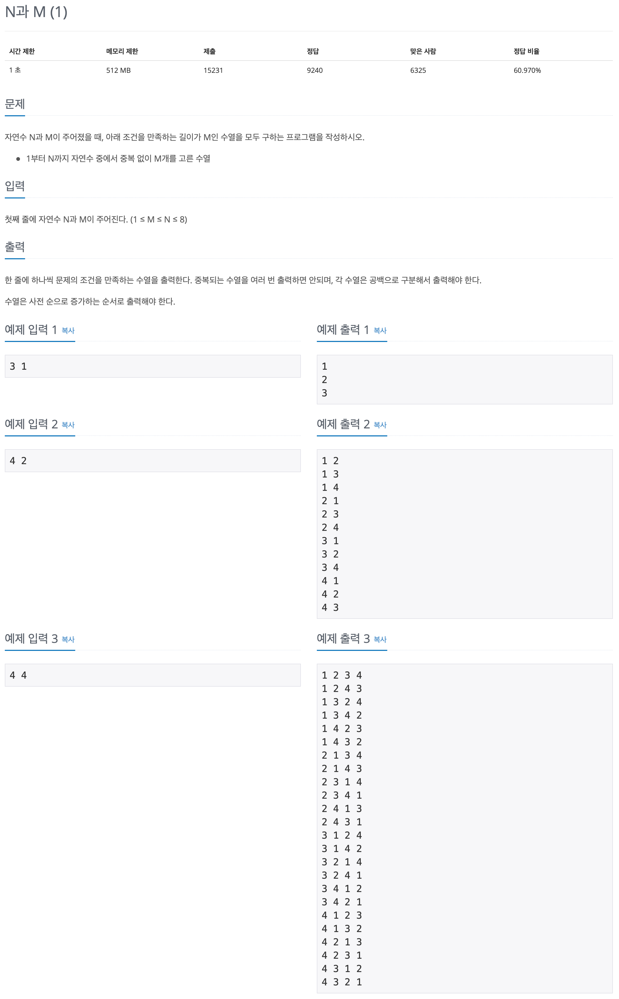

백준 문제 풀이: 15649 - N과 M (1)

문제 파악
N까지의 자연수 중 중복 없이 M개를 고른 수열은 순열(Permutation)을 뜻한다. 먼저 순열의 정의를 파악하고, 문제를 풀이하도록 한다.
문제 풀이
사실 이 문제는 Python을 사용한다면, itertools.permutations() 함수를 이용해 답을 바로 구할 수 있다.
Python에서 손쉽게 순열, 조합 등을 구할 수 있는 함수를 제공하기 때문이다.
하지만, 그것은 백트래킹을 연습하고자 하는 이 문제의 의도와 다르므로 사용하지 않도록 한다.
위에서 언급한 백트래킹(Backtracking, 퇴각검색)이란 무엇일까?
백트래킹은 DFS(Depth-First Search, 깊이 우선 탐색)의 방식을 기반으로,
불필요한 경우를 배제하며 원하는 해답에 도달할 때까지 탐색하는 전략이다.

위 그림과 같이, DFS를 기반으로 두고 있기 때문에 스택(Stack)을 이용해 퇴각을 하며 다음 탐색을 진행하기 때문에 백트래킹(또는 퇴각검색)이라 불린다.
백트래킹은 기본적으로는 모든 경우의 수를 탐색한다는 브루트 포스(Brute Force) 전략을 취하지만,
처리 속도를 향상시키기 위한 가지치기(Pruning)가 중요한 역할을 한다.
나무에서 불필요한 가지를 제거하듯이 백트래킹에서 가지치기를 잘 할수록 불필요한 경우가 제거되어 처리 속도가 많이 향상된다.
다시 문제로 돌아와서, 이 문제는 숫자를 선택하는 경우의 수로 이루어진 트리로 볼 수 있다.
반복적으로 숫자를 선택해 M개까지 골라 수열을 완성하는 것이 목표이다.
따라서, 백트래킹을 적용해 불필요한 경우를 배제한 모든 경우의 수를 고려할 수 있다.
숫자를 선택할 때는 1부터 N까지의 자연수 중 선택해야 하므로, 차례대로 선택하는 경우의 수가 있을 것이다.
이때, 반드시 해당 경우의 수를 스택에 추가(Push)하고, 동작(여기서는 f() 함수)이 끝난 후에는 다시 스택에서 빼내는 작업(Pop)이 필요하다.
그래야 정상적으로 이전의 상황으로 돌아올 수 있기 때문이다.
for i in range(1, n + 1):
s.append(i)
f()
s.pop()그렇게 선택을 반복했을 때, 그 선택한 경우의 수가 M이 되면 모두 고른 것이 되므로 해답이 된다.
if len(s) == m:
print(' '.join(map(str, s)))하지만, 위와 같이 항상 1부터 N까지의 자연수를 모두 순회하면, 이미 선택한 숫자를 또 선택해가며 시간을 낭비하게 된다.
그래서 이미 선택한 숫자를 다시 선택하려 하면 배제하는 방식으로 가지치기를 할 수 있다.
if i in s:
continueP.S. 함수 호출 스택 이용하기
여기서는 DFS를 위한 스택으로 Python의 List를 이용했다.
이와 다른 방식으로 다음과 같이 순수하게 함수만을 이용해서 구현할 수도 있다.
1
2
3
4
5
6
7
8
9
10
11
12
13
n, m = map(int, input().split())
def f(s):
if len(s) == m:
print(' '.join(map(str, s)))
return
for i in range(1, n + 1):
if i in s:
continue
f(s + [i])
f([])
이것이 가능한 이유는 함수의 호출 방식이 스택의 동작 방식과 일치하기 때문이다.
함수가 호출되면, 함수의 호출 스택에 함수를 위한 요소들이 차례대로 쌓이고(Push),
함수가 종료되면, 함수의 호출 스택에서 해당 요소들이 제거(Pop)된다.
결국, 함수가 호출되기 전의 상태로 돌아가게 된다.
이처럼 함수 호출 스택을 사용해서 스택을 이용하는 다른 알고리즘에 적용해 보는 것도 도움이 될 것 같다.
풀이 소스
문제 풀이 환경: Python 3.7
1
2
3
4
5
6
7
8
9
10
11
12
13
14
15
16
n, m = map(int, input().split())
s = []
def f():
if len(s) == m:
print(' '.join(map(str, s)))
return
for i in range(1, n + 1):
if i in s:
continue
s.append(i)
f()
s.pop()
f()